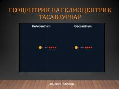

GVQadimgi olam tuzilishi va geosentrik hamda geliosentrik qarashlar tarixi haqida ilmiy asar.
Ushbu kitobda olam haqidagi dastlabki tasavvurlar, geosentrik va geliosentrik tizimlar hamda Yerning dumaloqligiga oid dastlabki ilmiy dalillar bayon etilgan. Muallif Yodgor Rajabov qadimiy astronomik qarashlarning rivojlanish bosqichlarini oddiy va tushunarli tarzda yoritib beradi. Asar ilm-fan tarixi va koinot tuzilishi bilan qiziquvchilar uchun mo'ljallangan.